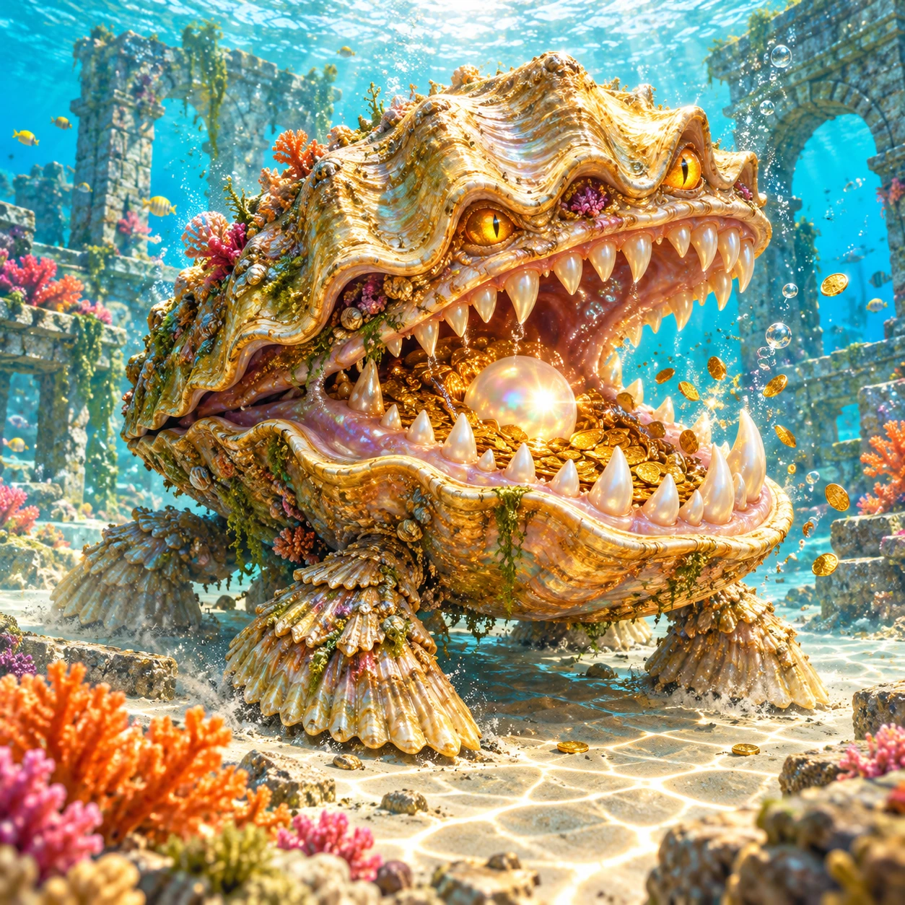
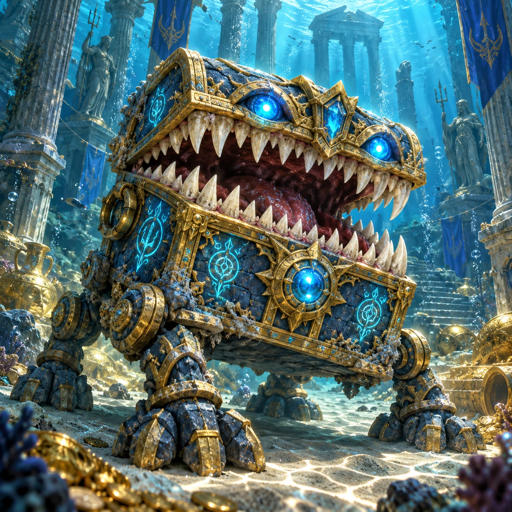
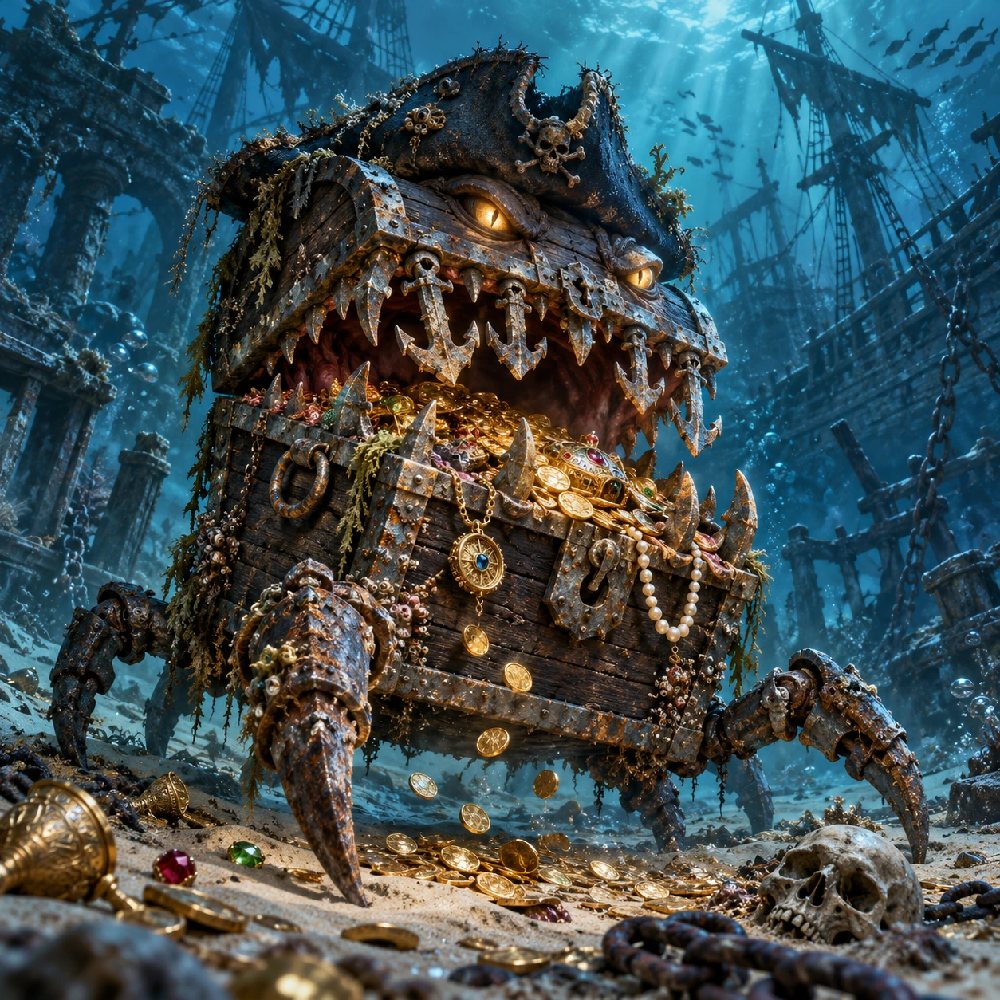
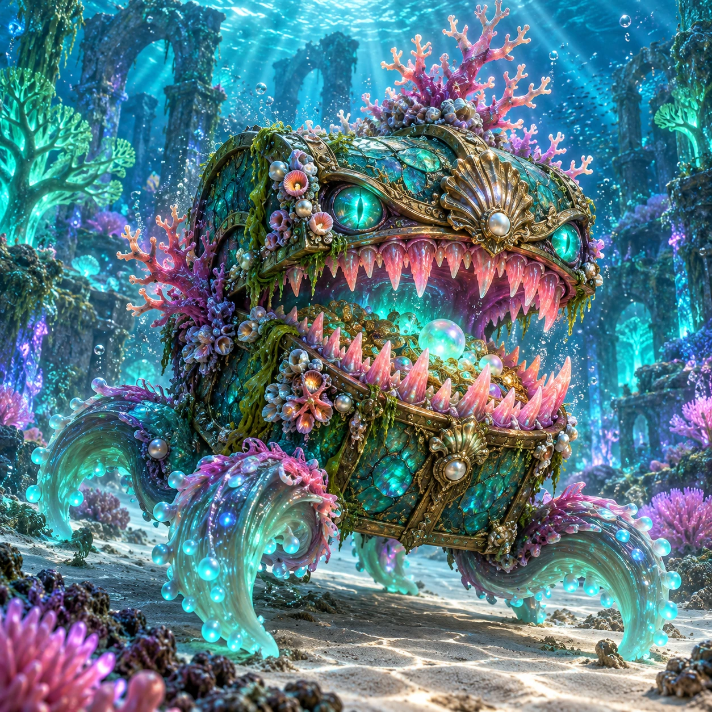
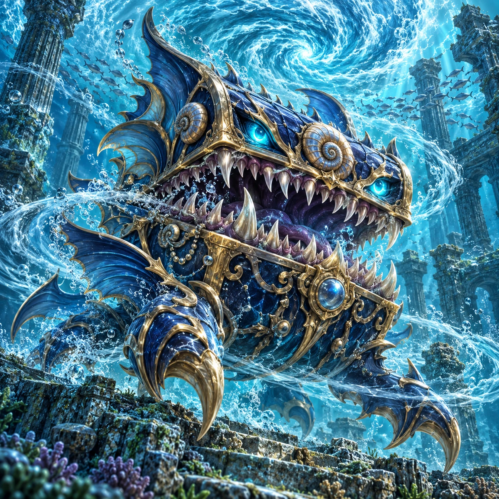
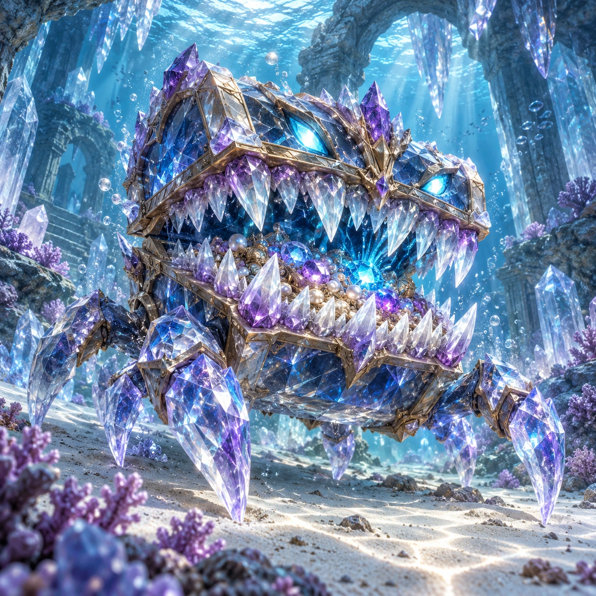
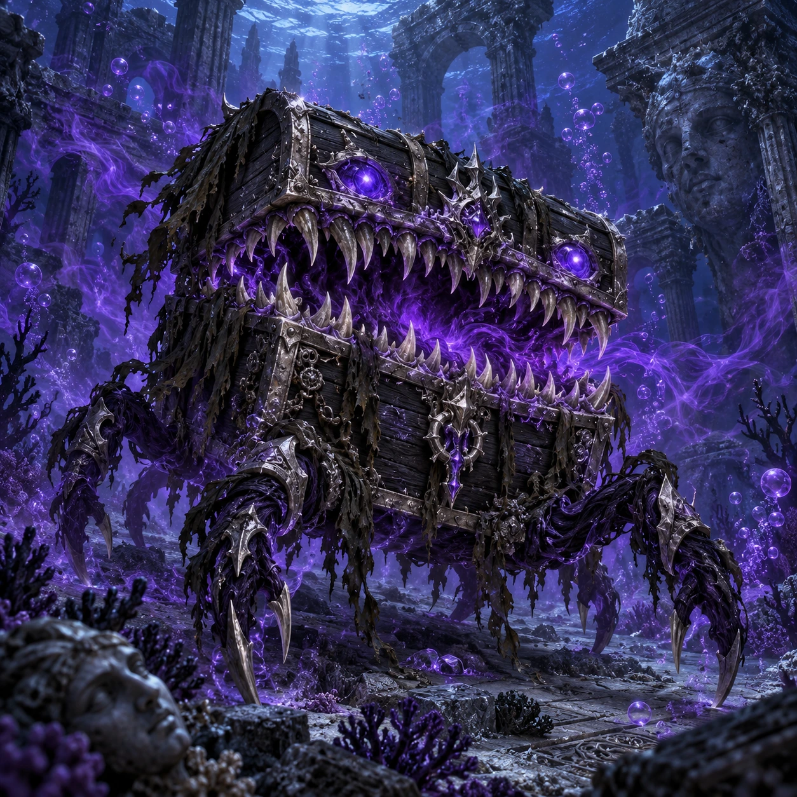
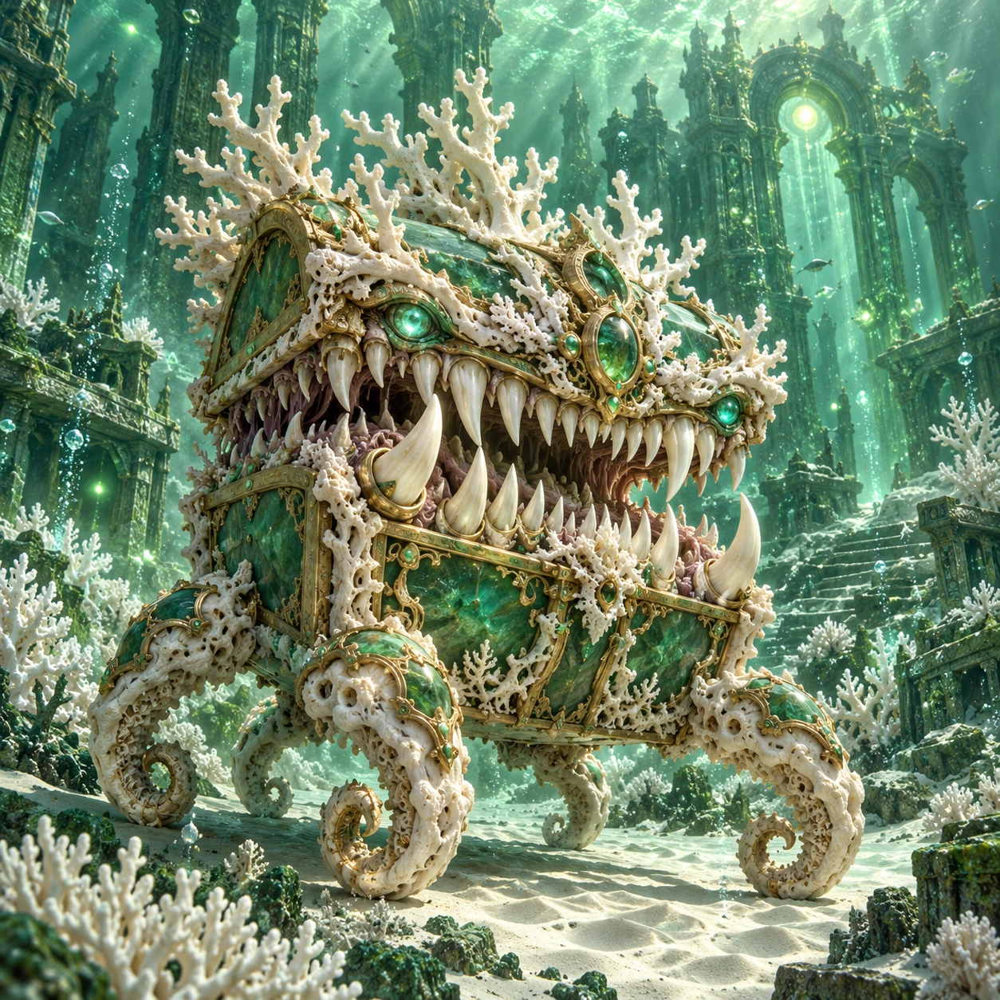
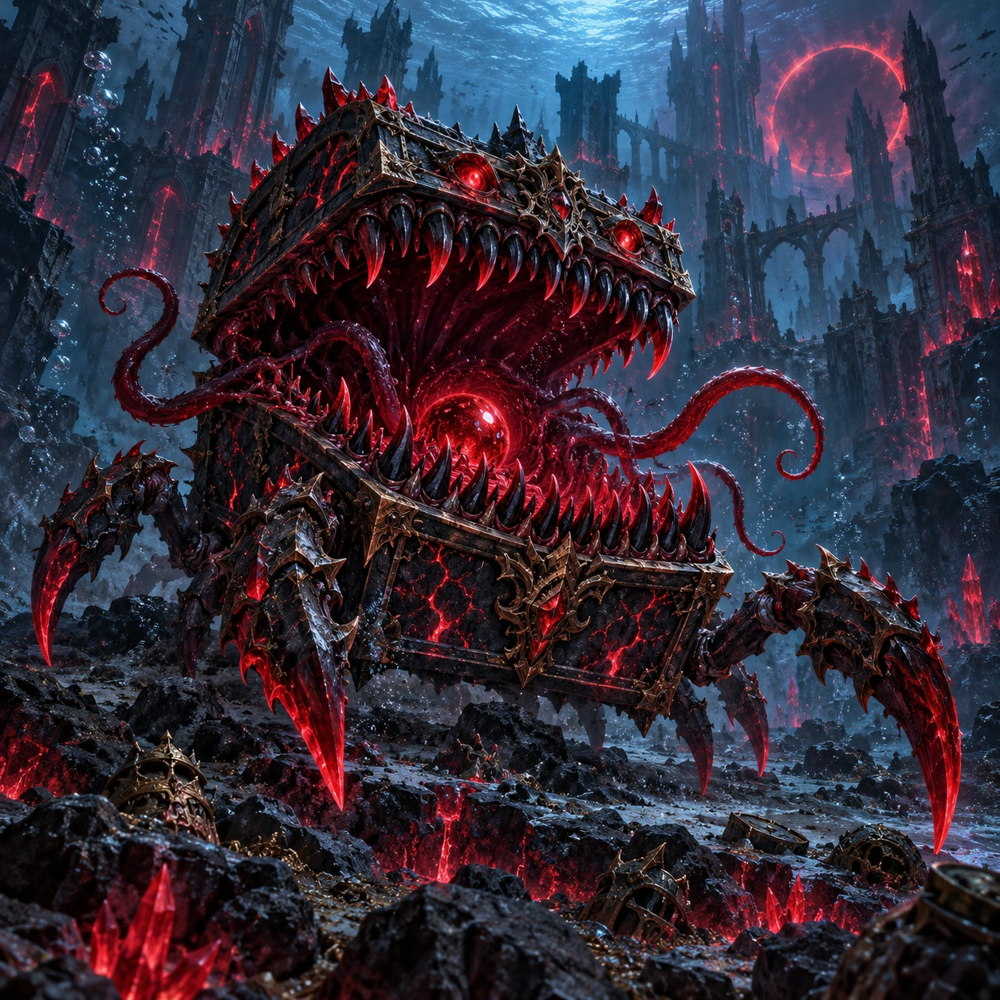
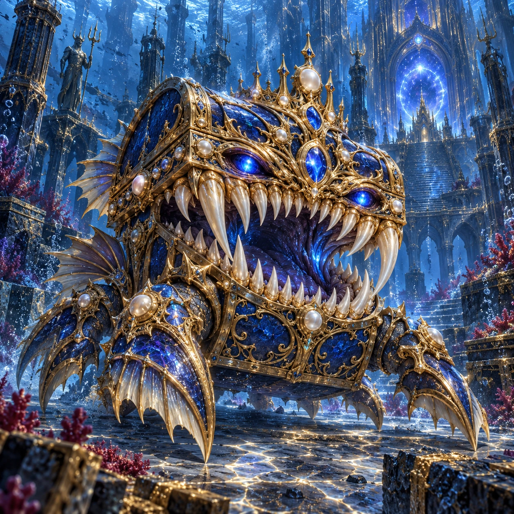

Sonnenlagune
Schnappmuschel der Sonnenlagune

Versunkene Tempel
Runenlade der versunkenen Tempel

Wrackfriedhof
Käpt’ns bissige Beutekiste

Leuchtender Korallenwald
Korallenmaul des Leuchtwaldes

Strudel der Gezeiten
Strudelschlund der Gezeiten

Kristallgrotten
Kristallrachen der Grotten

Verfluchte Tiefen
Fluchlade der verlorenen Seelen

Wahrer Abgrund
Urkorallen-Truhe des Abgrunds

Abyss
Leerenmaul des Abyss

Thron der Urtiefe
Königsmimic der Urtiefe